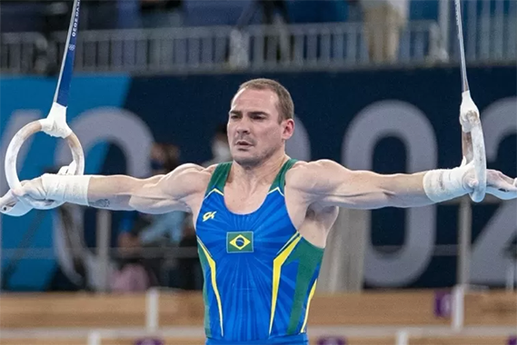

Olimpíadas: Brasil fica fora da final por equipes na ginástica masculina Leia Mais... Zanetti, Caio Souza e Diogo Soares garantem finais individuais na ginástica Leia Mais...  Olimpíada de Tóquio: Quem são os representantes do Brasil na ginástica artística Leia Mais... Olimpíadas: acompanhe as brasileiras disputas da ginástica! Leia Mais... Com grandes nomes, Brasil tem algumas dúvidas na ginástica artística em Tóquio Leia Mais... Confira abaixo alguns dos melhores momentos da Ginástica: